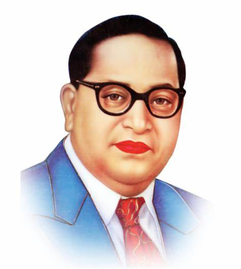

B. R. Ambedkar
(1891-1956)
Bhimrao Ramji Ambedkar
(14 April 1891 – 6 December 1956) was an Indian jurist, economist, social reformer
and political leader who headed the committee drafting the Constitution of India from the
Constituent Assembly debates, served as Law and Justice minister in the first cabinet of
Jawaharlal Nehru, and inspired the Dalit Buddhist movement after renouncing Hinduism.
Education Of Dr B. R. Ambedkar
He was selected in that university and completed his master's degree in 1915 and this is
the time when he gave his thesis called 'Ancient Indian Commerce. In 1916, he started
working on his new thesis, 'The problem of the rupee: Its origin and its solution' and
this was the time when he applied for the London School of Economics and got selected. In this
thesis, he was also helped by Governor Lord Sydenham. In Sydenham College of Commerce and Economics,
he became a political science professor, but he decided to continue his further studies and went to England.
He completed his Ph.D. degree in 1927 in Economics and was awarded a Doctorate by the University of Columbia in the same year.